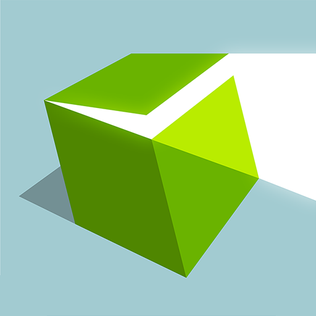

Masters of Albion
Genres: Real-Time Strategy
Website
Developer: 22cans
Publisher: 22cans
Platforms: PC
Released: 2026, April 22
Rated: Not Rated
Build by day, fight by night in an epic story of power and consequence. Design, build and customise your world, from the food your people eat to the clothes they wear, the weapons they wield to the homes they live in. Possess characters at will in this unique God Game - Masters of Albion! The story of Albion is one of power and consequence, a rich and deep narrative set in a world full of quests and moral choices. Navigate your way through intrigue and plot - kings come and go, lords shake you by the hand then stab you in the back, and the people work like dogs and are treated no better. Gifted god like, ancient powers, you face an enemy the likes of which have not been seen in hundreds of years. Magic is returning to the hills and halls of Albion, threatening to tear down the the very foundations of society. Unravel the mystery of the mages, defeat the enemy that lurks in the night and conquer a sorcery that could kill us all.